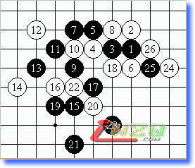
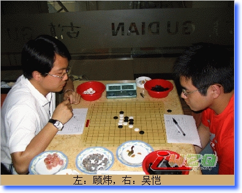
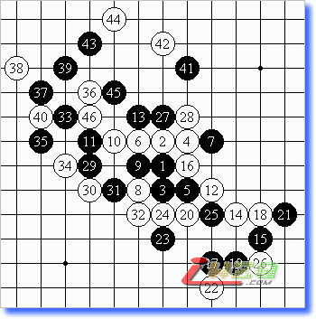
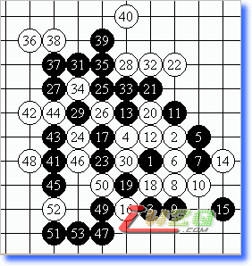
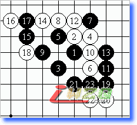
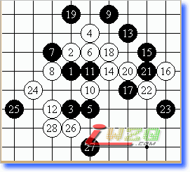

得失寸心间——2007年新老对抗赛自战记
#1 得失寸心间——2007年新老对抗赛自战记 作者：有志青年 发表时间：2007-12-26 12:00:02
已经连续三届参加新老团体对抗赛了，本届还担任老将队的主将，更感责任重大。尽管知道老将队取胜可能性较小，但希望至少能给新人压力，促使他们尽快成熟，成为一线棋手队伍的中坚力量。这也是我从事行政工作以来的一个心愿和目标。
第一局的对手是小神。虽然入门较晚，但是他本身学过围棋，且具备业余四段的实力，在实战计算方面不容小觑。小神猜得先手布局云月。我没有提出交换。白4最强，黑的两打点令我诧异。我拿掉了26位，留下了实战的黑5。白6是当时的感觉，事后研究发现有更强的手段。黑7很妙，白8如走26位，黑9只要走在白8上，白就败了。实战是自以为是的变化，事后拆解是必败的。黑9到白14必然。黑15开始其实是有连续VCT的追胜方法，还好小神当时没有发觉。黑15强手，白16唯一。黑17开始过于简单，似乎走在22位更好，白最强应该只能下在4下面。虽然一时胜不了，但比较容易控制。黑19、21一直企图在角落里面做文章，但这时我已经计算清楚了，所以比较放心的防御。黑23莫名的一手，白简单三三胜。

接着是和KIY对局。吴恺的风格很象当年初出道时的陈文夏，防守反击型。虽然只有1级，但已经初步具备初段的水平。

他布局松月。我的白4变成银月，主要想看看他执黑如何下优势局。黑13是上世纪的主流变化。黑17是定式的妙手，迅速打开局面。白18唯一，牵制黑棋继续扩大优势。黑19是较易看见的棋。白20的交换，令黑棋觉得痛苦。黑23到白26的交换，使下方得以安定，尽管黑棋掌握着步调，但是双方基本保持均衡。黑27很好的手段，仅此一手就可以推荐晋升初段。由于是只有30分钟的比赛，所以没有太多时间考虑，为了求稳，我下了实战28。黑29继续施压，白30强防。黑31的交换不错，白32是息事宁人的下法。我看到吴恺的时间已经不足5分钟。黑33到白36的交换起初认为很不错，但是突然看到黑37后似乎有一套杀法，于是非常恐慌的进行计算，最终为了时间，决定赌博，虽然事后研究发现有强防。白38最强防，黑39让我送了一口气。下面的几手棋是黑在时间问题上的最后挣扎。最终吴恺因为超时而遗憾的输了这局。

第三局对丁炯。我终于猜先获得布局权利，这也是6轮中唯一的一次布局，可惜结果令人“伤心”。由于最近在明星战中输给小丁，因此，这次我继续布局明星。小丁提出交换，我打出白4强防变化考验他。白6后他的黑7没有走8的位置。白8最强手段，黑9、白10都是针锋相对的着数。黑11是预料中的变化，但白12的变化走错了，不是我预想的最佳方案。应该走白18、黑19、白15、黑L4、白23。实战陷入苦防。这局棋进行过程是我最想睡觉的时候，脑子里想的变化云里雾里，心中又是患得患失，不知道该如何下好，等最终确定时，半小时的对局时间已经被我消费掉20分钟了。心中暗道不好，匆忙下了14手防御。黑15、白16的交换，我稍稍放心。但是黑17的强烈手段让我头疼不已。白18、20无奈之招。黑21的攻击似乎略显简单。黑25、27强手，白28唯一，黑29，白30唯一。黑31后白32是拼命的下法，但我的剩余时间只有1分钟，许多都是感觉手。黑51后败。

第四局是同阿布对局。由于有上局失利和阿布执白松月逼和葛帅的前车之鉴，当她布局丘月后，我立即提出交换。常规的二打。以下一路定式，白14绵三防令我有些吃惊。于是决定走老变化，白18的防御令我错愕不已。黑19开始简单追胜。事后阿布告诉我说，老变化忘记了。运气的一局。

俗话说：运气来了，门板都挡不住。真是一点都没错。第五局和徒弟对阵，上一轮他同葛帅的对局中骗招用的很成功，但当胜利来临之际，居然极富戏剧性的输了，估计对他有一定影响。他布局瑞星，我决定用骗招。白12老变化，黑13强手。白14是日本河村九段最早的研究，黑15—白18都是定式，黑19强手。在前一周活动中我告诉过小元，但我估计他不会认真去拆解。白20骗招。根据我对小元的了解，上周告诉过他变化，本次继续用，他一定会加倍小心，肯定多数是先来防御。果然黑21落入陷阱。白22以下是老顾的研究成果，记得牺牲在这招下的还有罗锦伟同志。：）白28后小元认负。

最后一轮是对黄宇峰。近来小黄上升势头很猛，不仅担任两地擂台赛我队三锋，还拿了最近一期小棋战冠军。HYF布局松月，我交换。
#2 Re:得失寸心间——2007年新老对抗赛自战记 作者：松痕 发表时间：2007-12-27 14:13:00
不是回复的这篇，我帖子被回复了，但还在回收站，郁闷．#3 Re:得失寸心间——2007年新老对抗赛自战记 作者：行云流水 发表时间：2007-12-27 15:19:41
已经回复。